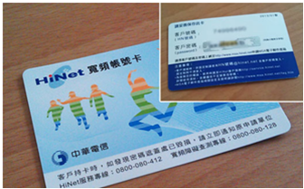

常見問題列表
针对目前大陸手機（安卓）无法登陆line的解决办法
請全程保持翻墻狀態！
1.卸載原有Line App。（記住不保留緩存卸載，抱歉之前的聊天記錄只能沒有了）
2.若是大陸用戶首先請拔出手機中的大陸SIM卡，不要在手機自帶應用商店下載，翻墻安裝GooglePlay（如何翻墻？快使用ZebraVPNBox），在Google商店中下載Line Apps。
3.安裝Line 完成后請前往設定->應用程序管理->Line 關閉獲取位置信息，讀取聯繫人信息，修改系統信息。
4.打開Line 使用電話號碼登入（嘗試大陸電話註冊的Line同樣可以使用），此時會需要讀取驗證碼，此時插上SIM卡等待LINE驗證碼電話，填入驗證碼。
5.您可以正常使用Line了，不過記得要翻墻噢，VPN斷開后無法使用！
更多翻墙问题Zebravpnbox会全力帮助解决，我们是您放心的选择！
Q: 忘記密碼怎麼辦？
A: 路由器的初始用戶名是：admin 密碼是：admin。長按Reset鍵10秒可恢復出廠設置，但是VPN需要重新設定，慎重使用。
Q: WAN口獲取不到IP怎麼辦？
A: 檢查網線有沒有插好；確認模式開關撥到AP模式；如果使用PPPoE接入請重新確認帳戶名密碼是否正確。
Q: WAN口獲取到IP，但仍無法上網怎麼辦？
A: 請確認網路寬頻是否欠費，如果沒有請嘗試重啟路由器。
Q: 為什麼VPN狀態連接成功，但是無法訪問國際互聯網？
A: 您可以嘗試通過輕按reset鍵重新連接VPN，或者通過“MiniVPN”==>“MiniVPN狀態”頁面點擊“連接”按鈕重新連接VPN。
Q: 為什麼VPN網絡在某個時間段速度比較慢？
A: 由於VPN需要通過複雜的網絡環境進行連接，當您所處的網絡環境負載較重時（例如晚上，大量用戶觀看網絡視頻）可能會導致VPN速度變慢。
Q: 為什麼插上了3G/4G dongle，但是不能上網？
A: 請確認SIM卡沒有欠費，有些3G/4G dongle有流量開關，請在dongle管理頁面中將流量開關打開。
Q: 為什麼搜索不到要接入的Wifi？
A: 目前路由器WIFI默認使用臺灣的頻段1~11，這些頻段以外的頻段搜索不到。
Q: 如何接入Wifi？
A: Wifi默認名稱為MiniVPN-black(-white)-6位隨機碼，默認密碼為12345678。
Q: 為什麼我的3G/4G dongle插上去不工作？
A: 請確認模式開關撥到3G/4G模式，然後嘗試重新插拔dongle。
Q: 我的白盒的IP會變動對連接會有影響嗎？
A: 黑盒會發現白盒的IP變化，但這可能需要幾分鐘的時間，可以稍後進行重連。
Q: 為什麼只有google和大陸網站可以打開，facebook和youtube打不開？
A: 請確保PC或手機沒有手動填入固定DNS；PC或手機存在DNS緩存，請嘗試斷開網路重新連接；如果還是無法打開請嘗試重啟PC或手機。
Q: 白色路由器和黑色路由器有區別嗎？
A: 白色路由器是放在自由網絡區（非中國大陸）的，黑色路由器可以帶到任何地方，黑色路由器通過白色路由器訪問國際網絡（翻墻）。
Q: 路由器的WISP 模式可以不接網線直接上網嗎？
A: 是的，這個設計是為了方便您在差旅時沒有網線也可以方便的上網。
Q: 路由器可以直接接光纖或者電話線嗎？
A: 不可以，仍然需要數據機（Modem，俗稱“貓”）。
Q: 可以搜索到無線信號，但是連不上怎麼辦？
A: 請確認您處於路由器的信號覆蓋範圍內，嘗試重新搜索無線列表，並確認輸入的密碼沒有問題。
Q: 在沒有交流電源的情況下可以使用嗎？
A: 可以，您可以在任何地方使用MiniVPN路由+移動電源（5V2A）+3G/4G dongle的組合方式進行上網。
Q: 路由器的USB口可以插入U盤或者硬碟嗎？
A: 目前不支援插入U盤或者硬碟，僅支援3G/4G dongle。
Q: VPN配置只能在白色路由器與黑色路由器使用網線相連時才能進行嗎？
A: 目前是這樣的，您可以關注我們的最新動態，之後的新版固件我們會解決這個問題。
Q: 在台灣安裝黑白機，是否有甚麼限制？
A: 由於要建立個人專屬的VPN，必須要在台灣有公網IP (Public IP)，只需要打電話給中華電信確認，一般而言只要您是申請中華電信、台灣固網都可以有公網IP (Public IP)，如果不確定您的上網服務是否有Public IP，請洽詢您的網路服務提供業者。
Q: 請問當我使用黑機在大陸的時候，也一定要有公網IP嗎?
A: 不需要，只需要在台灣有公網IP給白機即可，黑機不管在Wi-Fi，有線網路，或者搭配我們指定型號的4G網卡 (華為E3372h-607)，只要能夠上網，就能夠跟白機取得VPN連線。
Q: 如果我是中華電信的使用者，請問在用黑白機的時候，如何設定PPPoE的帳號密碼呢?
A: 中華電信給你的「Hinet寬頻帳號卡」，如下圖
PPPoE帳號 = XXXXXX@hinet.net XXXXXX=客戶號碼 (非固定制公網IP)
PPPoE帳號 = XXXXXX@ip.hinet.net XXXXXX=客戶號碼 (固定制公網IP)
PPPoE密碼 = 客戶密碼
Q: 非固定或者固定制公網IP哪一種搭配黑白機最好用呢?
A: 黑白機搭配固定制公網IP可以讓您的大陸連線最為穩定，但是需要上網跟中華電信進行申請。
前往中華電信或Sonet申請的網頁上，填入一些簡單的資料，就會立即配發一個固定IP給你了，
全程不用5分鐘，非常的簡單，而申請的網址如下：
1.Hinet : http://service.hinet.net/2004/adslstaticip.php
2.Sonet : http://www.so-net.net.tw/service/member/pppoe_fixip.htmloff120521
以中華電信為例，我們來做個教學。
Step 1. 首先連線到「中華電信申請固定IP的網頁」，接著點擊最下方的〔我同意接受本契約條款」
Step 2. 接著輸入中華電信所給你的「Hinet寬頻帳號卡」背後
的客戶號碼(HN號碼)及客戶密碼，並且按下〔確認〕，
如下圖：
Step 3. 接著可以看到我們目前IP配發的狀態，是「八個動態IP」，因此請勾選「變更成一個固定IP+七個動態IP」， 並請在「聯絡信箱」中輸入您的聯絡信箱(在申請之後，會寄固定ip的資訊給你備份)，最後再點擊〔確定〕。
Step 4. 接著就設定完成了Q: 而在申請好固定IP之後，撥號時要如何設定才能取得固定公網IP？
A: 使用固定IP的方式，和以往您撥號的方式，會有一點點不一樣，以中華電信的來說，原本您都是用 「12345678@hinet.net」來當作撥號的帳號名稱，來取得一個「浮動IP位址」，而如果您想要在撥號後 取得一個固定IP位址的話，就要改用「12345678@ip.hinet.net」，注意到有什麼不同了嗎？ 多了「ip.」這三個文字，只要在撥號時，用這個名稱撥號，所得到的IP就會是專屬於你自己的固定IP。 Sonet也是一樣的，只要你在撥號時，使用「帳號@ip.so-net.net.tw 」這個名稱來撥號，那也會得到固定IP位址。
如果以上常見問題並沒有幫助到您，您可以通過以下方式尋求説明
QQ:2582095856
微信：zebravpnbox@sina.com
Line：zebravpnbox
郵箱：zebravpnbox@sina.com